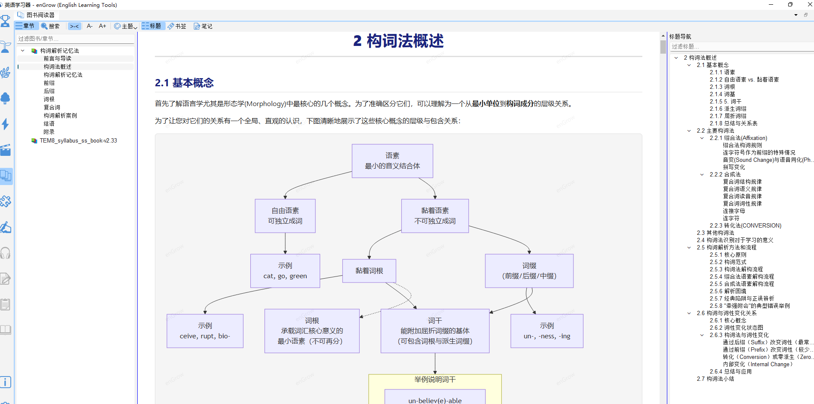

图书阅读器
📚 本功能提供内置英文图书的阅读能力，部分图书需单独购买。
18.1 功能说明
图书阅读器（📚 图书阅读器）内嵌于 enGrow，支持阅读英文 Markdown 格式图书，并与词典、单词精解等功能深度整合：
- 阅读时遇到生词，可即时查词典
- 阅读进度自动保存
- 图书内容与词汇学习数据关联
18.2 打开图书阅读器
- 点击工具栏的 📚 图书阅读图标
- 或打开「图书阅读器」面板

18.3 如何规划组织系统性学习
章节目录:
第一章 什么是系统性学习
第二章 规划方法
第三章 规划阶段要点
第四章 学习阶段要点
第五章 学习方法
第六章 学习工具
第七章 总结与终身学习
附录
18.4 构词解析记忆法
针对不同考试类型的大纲词和核心词提供32个定制版本和完整版包括: 《构词解析记忆法》 初中版
说明：以下字数为 v2.5.7版本， 各个版本的字数可能或略有不同， 以实际字数为准 。
章节目录:
前言与导读
构词法概述
构词解析记忆法
前缀
后缀
词根
复合词
构词解析案例
结语
附录